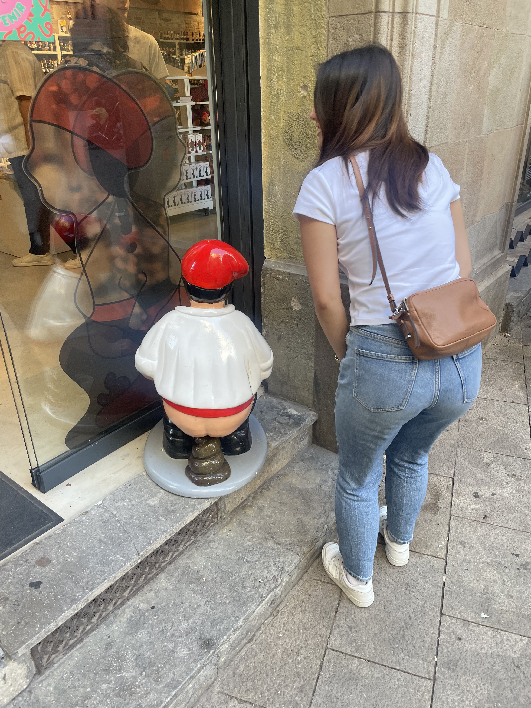
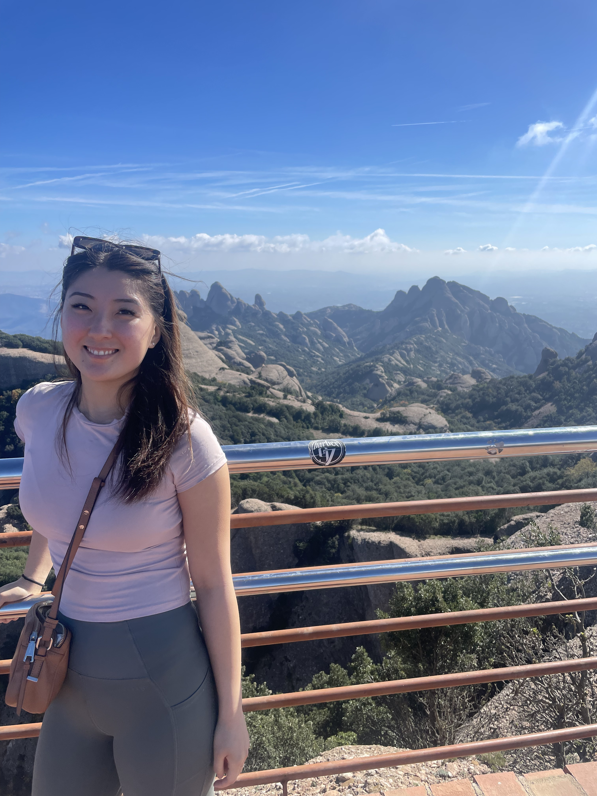
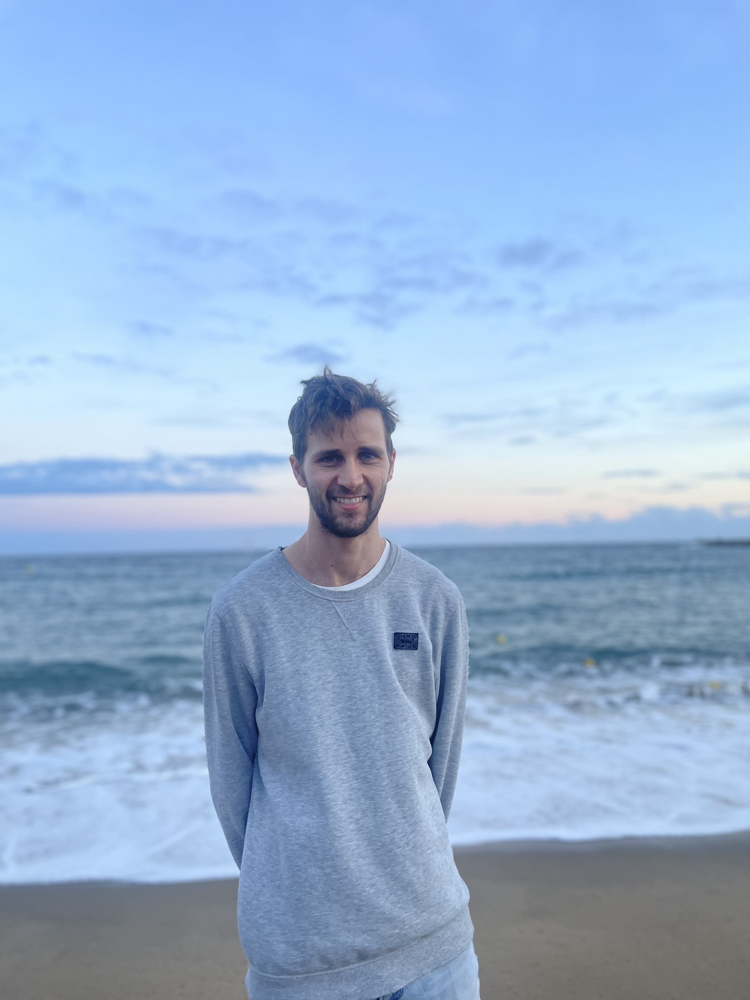

20th October 2024
Our first morning started by waking up in Barcelona and walking the beautiful streets. Our theme of today was Antoni Gaudi, an architect famous for his unique style which was far ahead of his time. We visited Parc Guell and Cassa Batillo. We finished off the night with pizza served in an underground parking lot and fresh lemon beer served on a rooftop overlooking the skyline or Barcelona

21st October 2024
The challenge of the day: hike to the top of Montserrat. An abbey perched among towering mountain faces which still is home to monks was our target for the day. We caught a cable car up to a landing and then started to hike to the higest point to get an amazing view of Barcelona. We also got an impressive view of Spain's climbing community on the way up. We had a view over Barcelona and out across the rest of Catalonia once we had reached the top. Coming back down was an easier route...and gave us some time at the end to explore the abbey. However the line to view the Virgin of Montserrat seemed neverending! We skipped this and instead came back down to Barcelona to finish with some traditional tapas for dinner.

22nd October 2024
We started off the morning at a large market where we tried some enchiladas, smoothies and cheese! Next we walked through the Segrada Familia. This is the most impressive building I have ever been in! On the outside it is unbelievably tall with intricate details up and down the building. On the inside the use of colour and light creates a spectacular setting! We ended the day catching the sunset down at Barceloneta beach where we caught locals playing all sorts of sports!

23rd October 2024
We hopped on a renfe high speed train down to Madrid. On arrival we needed to fill our bellies, so we decided to go to the 'oldest restaurant' in the world. We ordered a serving of pork and it was the juciest most delicious pork we had ever had! We then toured through the Royal Palace of Madrid, it was room after room of elegant decor. We finished off the day by drinking home made sangrias and eating local calamari sandwhiches which were a little on the dry side but still yummy!

24th October 2024
A change of pace saw us head to El Retiro park to smell the roses and other flowers. We stopped off for a local delicacy for lunch...which consisted of snails and olives! Surprisingly the snails were quite yummy although the thought of them challenged Sophie. We took the rest of the day off to relax and recooperate.

25th October 2024
In the morning we treated ourselve to a Madrid style breakfast of hot chocolate with biscuits. The hot chocolate was too rich for me! We moved on to taking a cooking class where we made spanish tortillas, patatas bravas and many more! My favourite was the tomato focacia and the guzpacho soup. Yum!

26th October 2024
Our final day in Madrid we tried something different, tandem cycling in Casa de Campo! After a few false starts in the parking lot, we set up to the top of the hill and took a lovely route back down with a view of Madrid. Next up was another high speed train to Seville. We were mesmerised by the close winding streets and the orange trees as we made our way to the airbnb. We had time to stop off for chocolate covered churros as well!

27th October 2024
On this day we explored the sights of Seville, meandering through the streets to parks, fountains, markets and more. By far the most popular was the Plaza de Espana where tourists and locals gathered with horse drawn carriages paraded around the plaza. We quickly moved on to the main river running through Seville which had established itself as a trade powerhouse. Finally we caught a flamenco show in the evening in a small and intimate venue.

28th October 2024
After a quick bakery stop we were taken through the Royal Alacazar, a palace which is mostly unused but is grand and spectacular. It was actually the scene of some Game of Thrones storylines and often it is used to host large scale events for the public. We could see why! It mixed lush green spaces with intricately designed indoor spaces. We also ate at another traditional tapas place with iberico ham and paella.. A fun final day in Seville as the weather turned before the tragic flooding in parts of southern Spain.